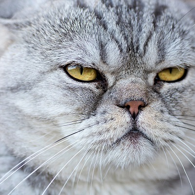

It is such a great time to have you visit me. This page consists of my basic infomations.
Hope you have a pleasant time looking at my page!<3
Malang, May 20th 2003
Bukit Cemara Tujuh DD-2, Malang
Currently studying Information System at ITS
Formerly at SMAN 8 Malang
